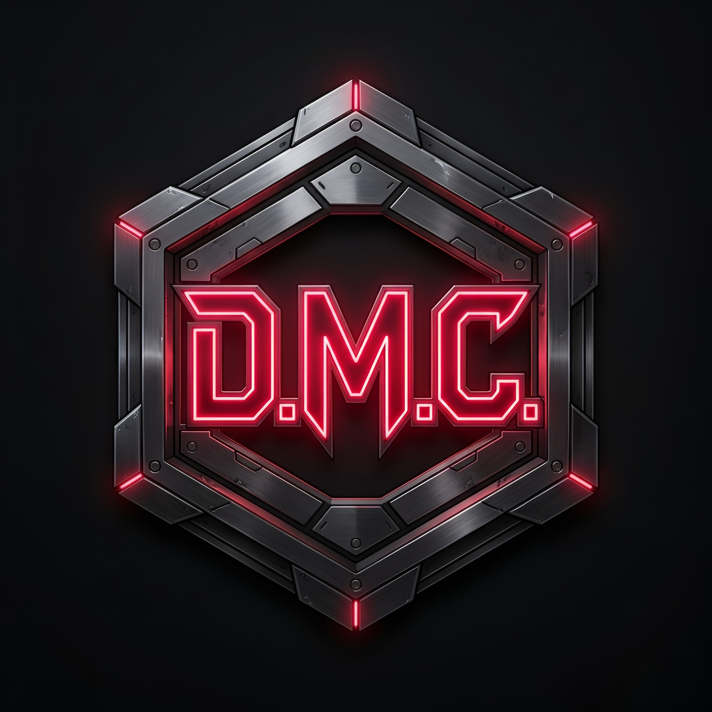
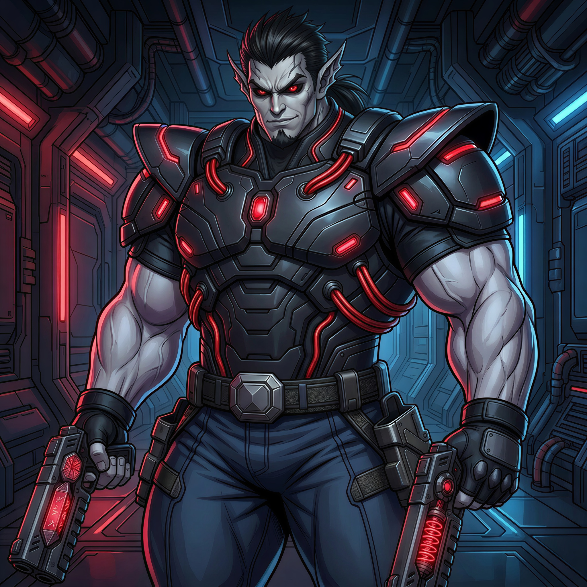

Dark Mecha Corps (D.M.C.)
História

A Dark Mecha Corps (D.M.C.) é a principal organização antagonista de HyperPulse Unbound, fundada em 1947 pelos irmãos Smerchnir e Arkhevon. Transformando antigas instalações industriais, zonas militares abandonadas e regiões isoladas tomadas à força em fortalezas mecanizadas altamente fortificadas, a organização rapidamente se tornou uma potência clandestina voltada à militarização extrema, desenvolvendo máquinas de guerra colossais, androides de combate, supersoldados geneticamente aprimorados e criaturas biomecânicas criadas para destruição em larga escala. Além de manter vastos exércitos tecnológicos, a organização busca artefatos ancestrais ocultos ao redor do mundo, acreditando que esses poderes podem garantir domínio absoluto sobre a humanidade. Para expandir sua influência global, a D.M.C. recruta mercenários, assassinos e cientistas renegados dispostos a tudo em troca de poder, dinheiro ou sobrevivência.
Smerchnir

Idade: Desconhecida
História: Herdeiros de uma poderosa dinastia industrial e militar da Sibéria, os irmãos Smerchnir e Arkhevon nasceram no início do século XX e cresceram isolados, obcecados desde a infância por tecnologia, armamentos pesados e energia experimental. Em 1947, os dois fundaram a Dark Mecha Corps, uma organização criada para acelerar a evolução humana através da supremacia tecnológica e militar absoluta. Décadas depois, Arkhevon partiu sozinho em uma viagem intergaláctica em busca de artefatos ancestrais e tecnologias alienígenas, desaparecendo sem deixar rastros. Desde então, Smerchnir assumiu sozinho o comando da D.M.C. e transformou a organização em uma potência militar que opera nas sombras do mundo. Dentro da própria D.M.C., Smerchnir é tratado quase como uma entidade, sendo o criador da energia sintética escura, uma fonte artificial de poder desenvolvida exclusivamente para si após décadas de pesquisas proibidas. Também existem rumores entre soldados, cientistas e executores da organização de que Smerchnir talvez seja imortal, já que sua aparência permanece exatamente a mesma desde a fundação da D.M.C.
Ignacius Nightbane

Idade: Desconhecida
História: Ignacius Nightbane é um híbrido entre humano e a extinta raça demoníaca Drakkhori. Ele foi encontrado por Smerchnir em animação suspensa, selado nas ruínas de uma civilização esquecida durante uma investigação de artefatos antigos. Ao ser despertado, descobriu que sua raça havia sido completamente exterminada, restando apenas ele como o último vestígio dos Drakkhori. Sem mundo, sem legado e sem qualquer futuro próprio, Ignacius aceitou ingressar na D.M.C., tornando-se um dos membros mais perigosos da organização e empunhando com precisão suas pistolas gêmeas Dan e Maku como parte de seu arsenal. Ainda assim, sua natureza antiga e ambições silenciosas o levam ocasionalmente a seguir planos próprios, decisões que por vezes o colocam diretamente na mira de heróis como os Pulsebreakers.